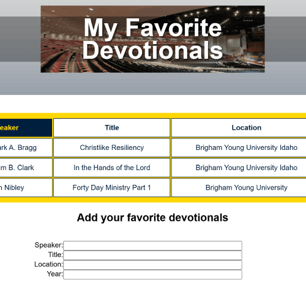
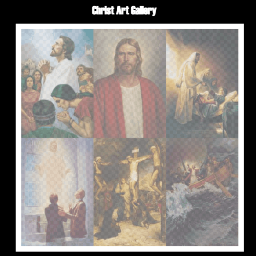
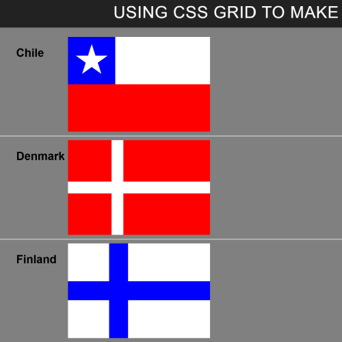
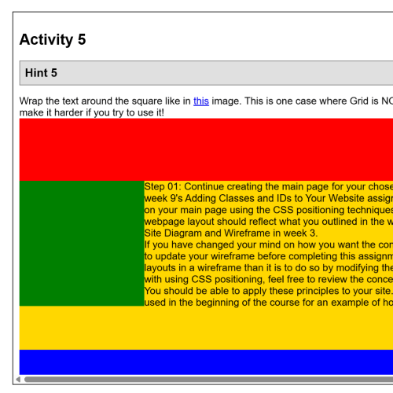
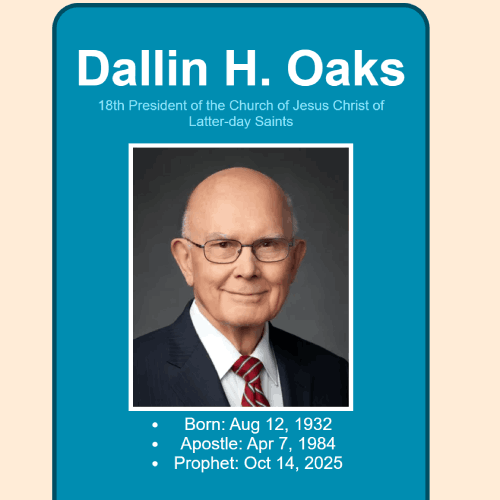
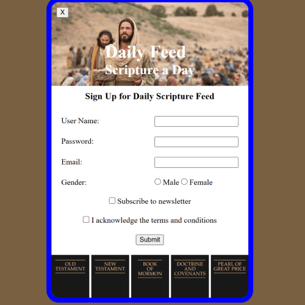

The Apostle spotlight was an ice challenge where students practiced their ability to arrange and size photos in HTML and CSS. In this challenge, students were given a screen shot of a finished product that they were then supposed to replicate as closely as possible.

This ICE challenge was a holiday challenge commemorating the upcoming father's day. In this challenge, students were given prewritten HTML code that they were instructed not to edit. They were then given roughly 45 minutes to write their own CSS code to style the page. Students were then allowed to see each other's pages to see the range of possible unique stylings for the same HTML code.

In this ICE challenge, students had to style a table to display information of their favorite BYU-Idaho devotional talks. This assignment was meant to practice students' ability to style tables and forms.

In this ICE callenge, students were tasked with arranging and edit images to help the loading speed of the page. The exercise was meant to help students familarize themselves with image properties and editing them.

In this ICE challenge, students were tasked with using the grid display to create several country flags of varying complexity. this exercise was meant to let students practice and familiarize themselves with CSS grid positioning.

In this ICE challenge, students were tasked with recreating, from an image, arrangements of patterns and shapes using the various CSS display options including grid and float.

In this ICE challenge, students were tasked with recreating, from an image, a display card showcasing an image and information about the Church of Jesus Christ of Latter-day Saints Prophet President Oaks.

In this ICE challenge, students were tasked with recreating, from an image, a sign up page for a daily scripture feed service.